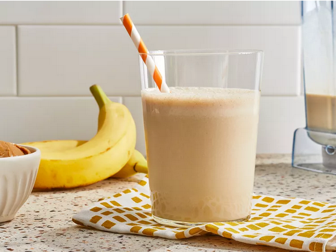

Peanut Butter Banana Smoothie

Description
A quick and easy recipe to make delicious peanut butter banana smoothies.
This smoothie can be modified to your heart's content.
You can experiment with different types of milk or different types of nut butters.
Originally from: allrecipes.com (new tab)
Ingredients
- 2 bananas, broken into chunks
- 2 cups milk
- 1/2 cup peanut butter
- honey as per taste (recommended: 2 tbsps)
- 2 cups ice cubes
Steps
- Gather all ingredients
- Place bananas, milk, peanut butter, honey, and ice cubes in a blender
- Blend until smooth; about 30s
- Enjoy!